Every screen in the NbS Tool, shown and explained.
The NbS Tool takes a Nature-based Solutions project through its whole life: scope a site on a map, read what is already there, choose an intervention pathway, produce donor-ready documents, and monitor what actually happens. This page walks that journey once, in order, with a picture of each screen and a plain explanation of every control on it.
Every figure in the screenshots on this page is illustrative sample data. The hectares, populations, carbon tonnages and indicator values shown are there to demonstrate how a screen behaves — they are not measurements of a real site, and the analysis does not yet change with the area you draw. Use this page to learn the interface, not to source numbers. Anything you intend to put in front of a funder must be verified in the field first; the tool says so on screen as well.
What the tool does
The NbS Tool is one platform carrying five jobs that are usually done in five different places. Each step feeds the next, so the boundary you draw at the start is still the boundary underneath the monitoring plan at the end.
You do not have to go in order. An organisation that already has a boundary file and a plan can import it directly at Step 4. A team that only wants to understand a landscape can stop after Step 2. The chapters below follow the full path because that is the clearest way to see how the parts connect.
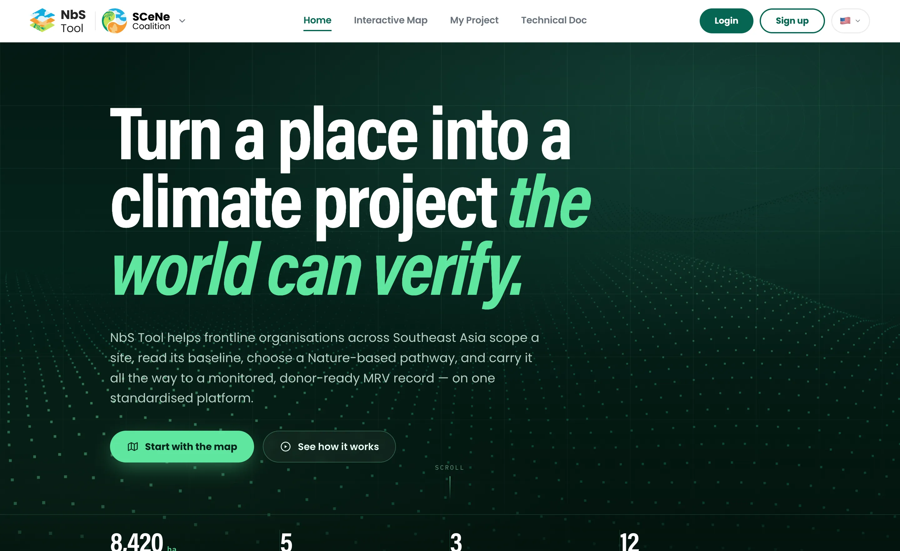
Frontline organisations, project developers, policymakers and funders working on Nature-based Solutions across Southeast Asia. No GIS software and no spatial analysis background is needed — everything on these screens runs in a browser.
1.1 The shell you see on every screen
Every screen carries the same bar at the top and the same footer at the bottom. Learning these two means you are never lost, whatever screen you land on.
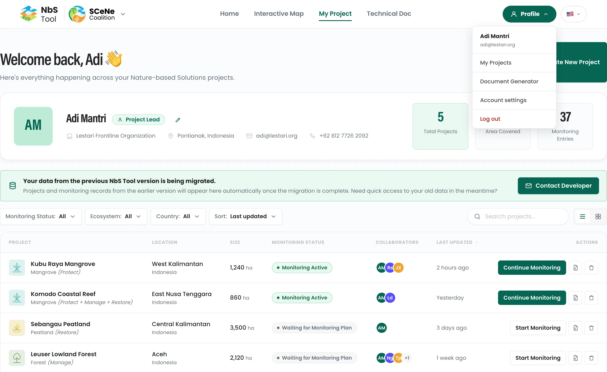
- The lockup, far left. The NbS Tool and SCeNe Coalition logos together. Clicking them returns you to the home page; the small chevron beside them opens the list of other SCeNe Coalition tools.
- Four links, centre. Home, Interactive Map, My Project and Technical Doc. The one you are on is underlined.
- Profile, right. Opens the menu in the picture: your identity, then shortcuts to My Projects, the Document Generator, Account settings, and Log out.
- Language switcher, far right. The flag button beside the profile.
- The footer. Repeats the six-step workflow as a strip of links, so you can jump to any stage from the bottom of any page — plus the supporting materials, including this walkthrough.
On narrow screens the links collapse into a drawer behind a burger icon, and some screens show a dismissible note recommending a desktop — the map in particular needs the room.
1.2 Accounts, and what signing in unlocks
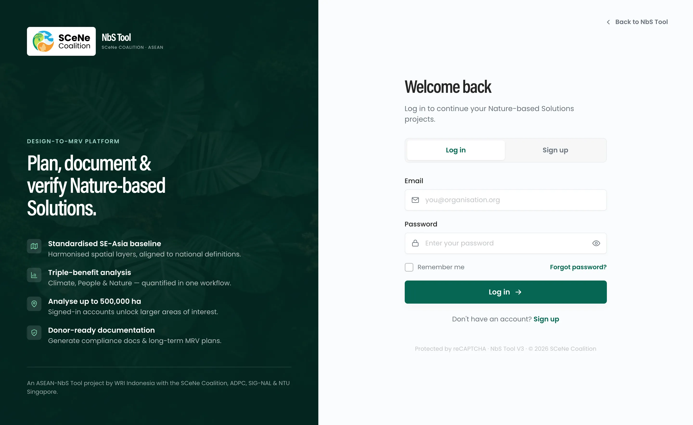
You can explore the map and run an analysis without an account. Signing in raises the size of area you may analyse — a guest is capped at 200,000 hectares, a signed-in account at 500,000 — and it is what lets you save a project, invite collaborators and keep monitoring records over time.
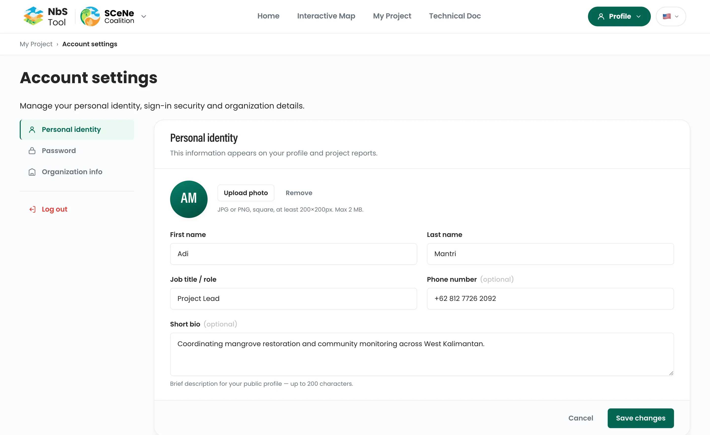
- Personal identity. Photo, name, job title, phone and a short bio. This is what appears on your profile and on project reports.
- Password. Change your password, with a live strength check and a match check as you type.
- Organization info. Your organisation's details, including a country → province → city picker that loads real place lists.
The Interactive Map
This is where every project begins: you tell the tool which piece of ground you are asking about. The map fills the screen, and a panel called the Data Analyser sits over it on the left, walking you through five numbered steps. You can collapse the panel at any point to see the map unobstructed.
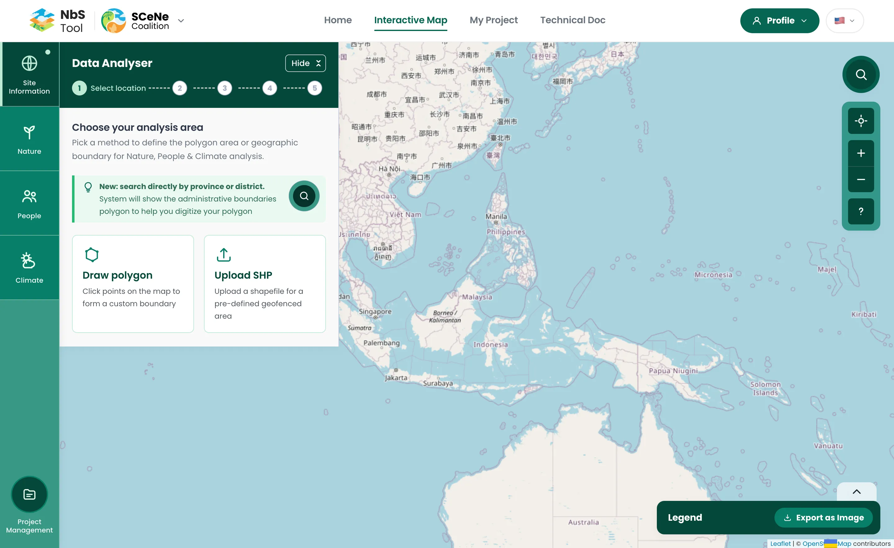
- The icon rail, far left. Four map-layer groups — Site Information, Nature, People and Climate — plus a Project Management shortcut at the bottom. These control what is drawn on the map itself.
- The Data Analyser panel. The numbered strip across its top is both a progress indicator and a navigation control: once you have passed a step you can click its number to go back to it.
- Hide. The button in the panel's header collapses it to a small tab, leaving the whole map visible. The tab brings it back.
- Map controls, top right. Search, locate-me, zoom in, zoom out, and a help button.
- Legend, bottom right. Collapsed by default; the chevron above it expands the full key.
2.1 Turning layers on, and reading the legend
The four icons in the left rail switch map layers on and off. A small dot appears on a group when it is active. Whatever you switch on is explained in the legend, grouped under the same headings, so the colours on the map always have a key.
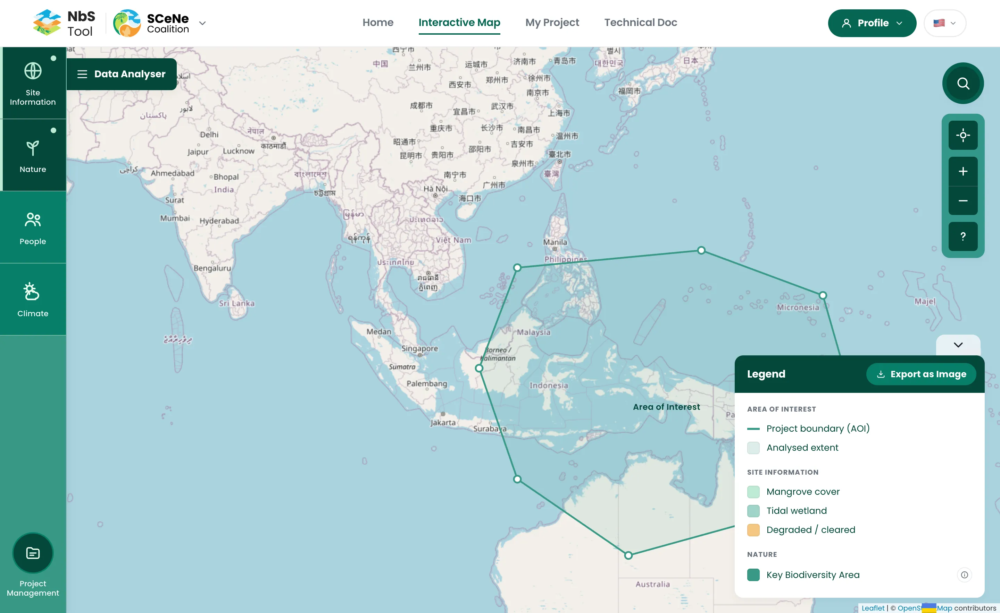
- Area of Interest. Always shown: the boundary you drew, and the extent that was actually analysed.
- The information icons. Beside individual legend entries; they open the same source-and-caveat panel described in chapter 3.2.
Export as Image, in the legend's header, is not connected to anything in this prototype. The button is there and it highlights when you hover it, but clicking it does nothing — there is no handler behind it. To get a picture of the map for a proposal or a slide, take a screenshot for now.
2.2 Choosing your area — three ways
Step 1 offers three routes to the same result: a polygon the tool can analyse. Pick whichever matches what you already have.
a Search for a province or district
The quickest start if you know the place by name. Type into the search box at the top right of the map and pick from the suggestions; the tool draws that administrative boundary for you, which you can then use as-is or adjust.
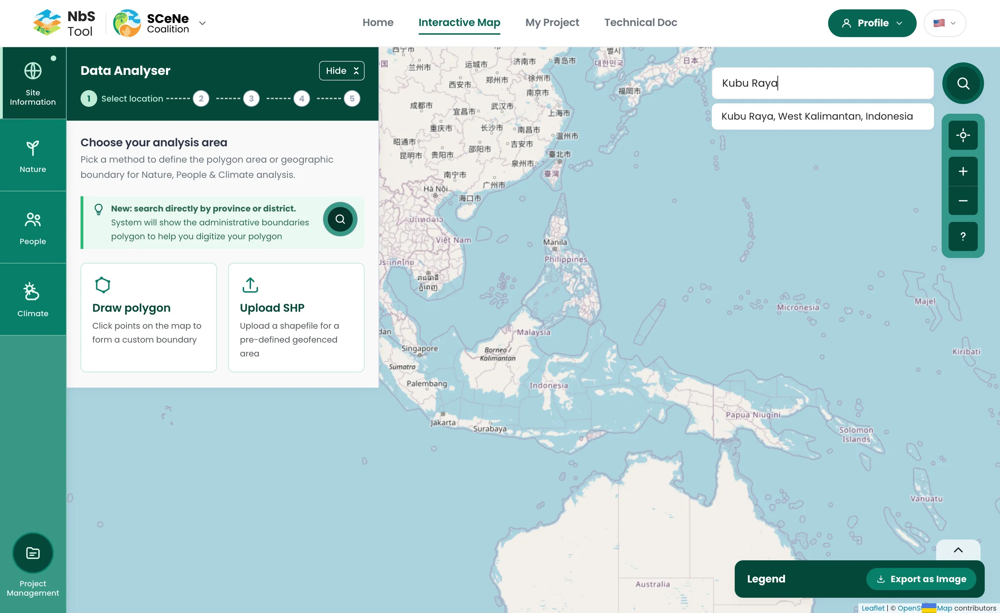
b Draw a polygon
For an area that does not match any administrative unit — a concession, a community forest, a restoration site. Click once on the map to place each corner, and double-click to close the shape.
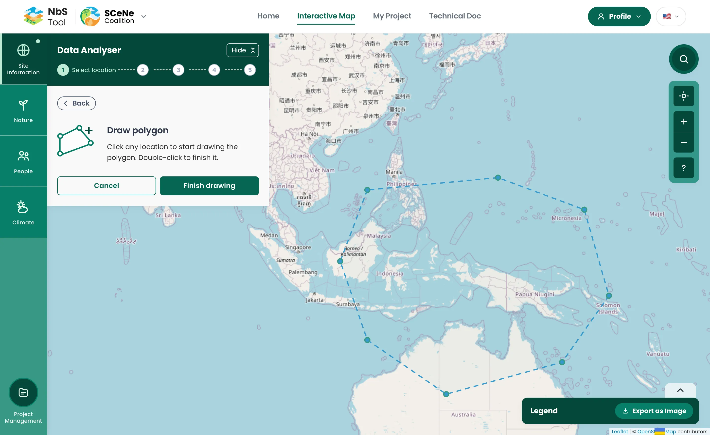
c Upload a boundary file
For a boundary that already exists in your GIS. Drop the file onto the panel or browse for it.
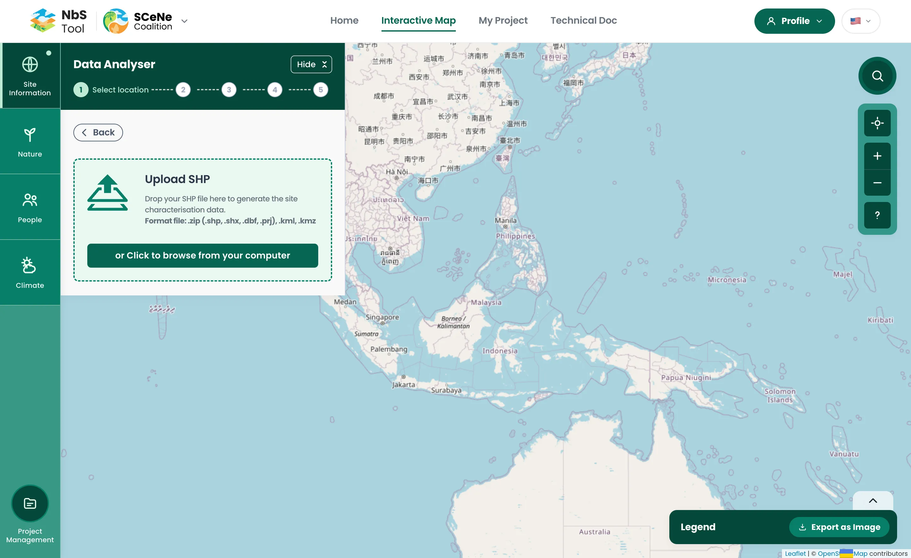
.zip holding the shapefile set (.shp, .shx, .dbf, .prj), or a .kml or .kmz.d Confirm the area
However you defined it, the tool shows the size it measured and asks you to confirm before it runs anything. This is the checkpoint: if the number is not what you expected, your boundary is wrong, and it is much cheaper to fix it here.
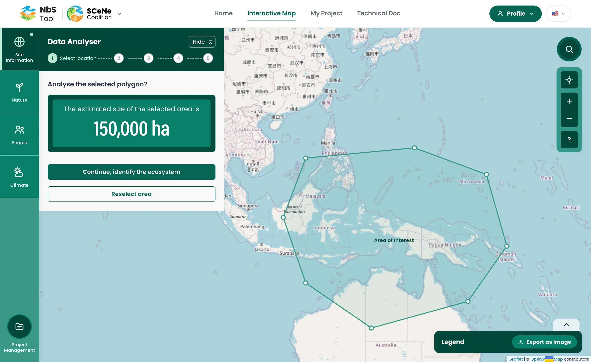
Above 200,000 hectares the confirmation step refuses to continue and shows a note offering a link to sign in for the 500,000-hectare allowance. Nothing is analysed until you are inside the limit.
Reading the baseline
Steps 2 to 5 of the Data Analyser are the heart of the tool. They answer four questions in order: what is here, what is threatening it, what can be done about it, and what that would be worth. Each step is a screen in the same left panel, and you can move backwards through them freely.
3.1 Step 2 · Site characterisation
The baseline, split across four tabs. The tabs are the same four families as the map layer rail, so what you read here matches what you can draw on the map.
General What ecosystems are here
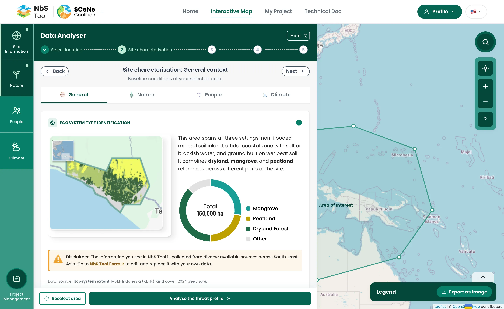
- The four tabs. General, Nature, People and Climate — the same four families as the map layer rail.
- The data source line. Under each card, naming the dataset and its year, with a link to read more.
- The disclaimer. Present by design: the tool is a screening instrument, and it says so next to its own outputs.
Nature Habitat, connectivity and biodiversity
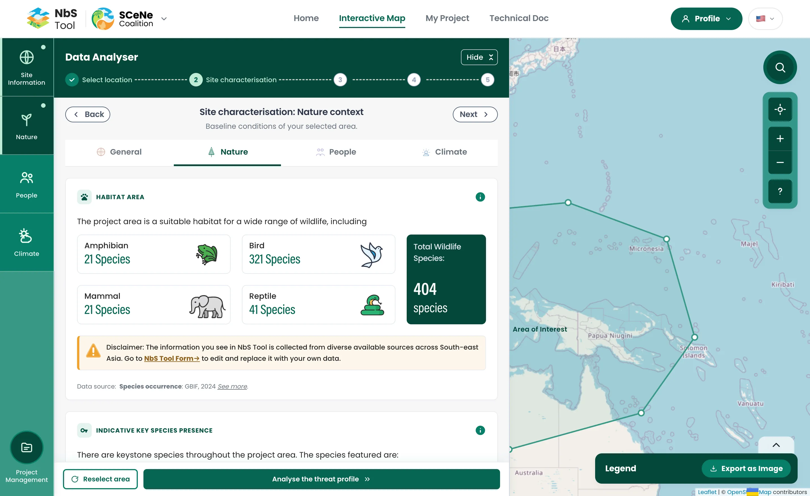
People Who lives here
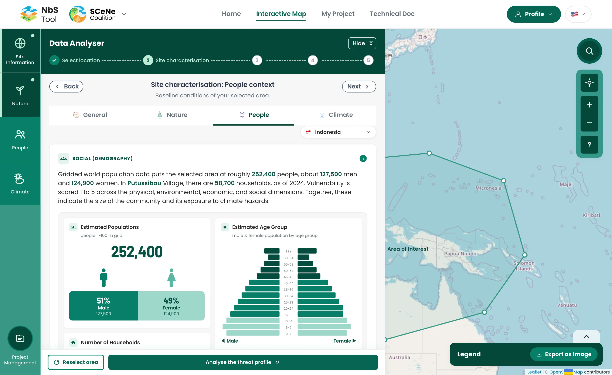
- The country dropdown. Above the cards. Socio-economic data is published per country, so the tool asks rather than guessing which national series to use.
- Population estimates. Drawn from gridded population data at roughly 100-metre resolution, then broken down by sex and age group.
- Vulnerability. Scored across physical, environmental, economic and social dimensions.
Climate Carbon, weather and hazard
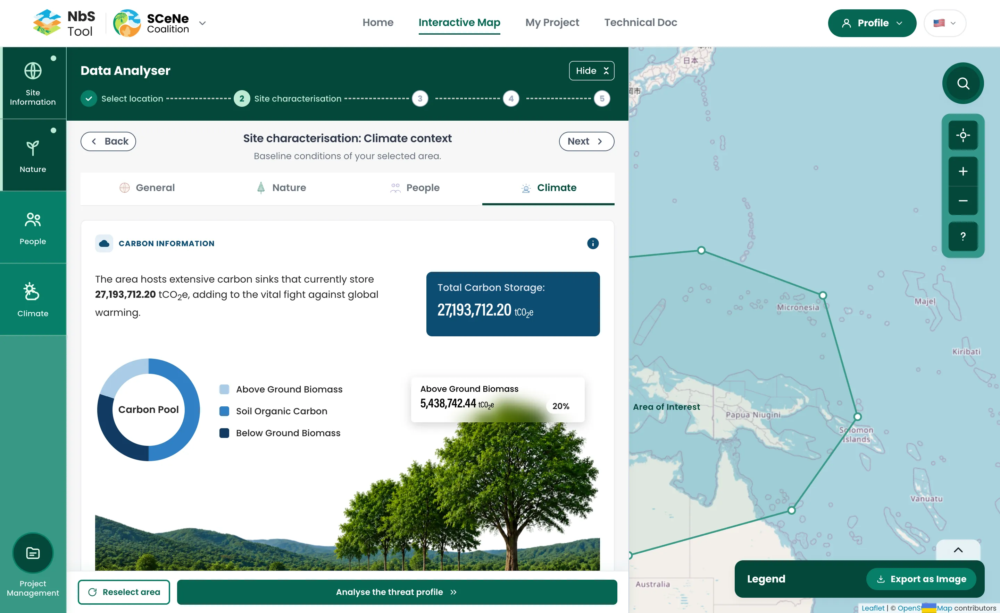
3.2 Where a number comes from
Every card carries a small information icon in its top-right corner. This is the most important control in the whole analyser and the easiest one to miss. Opening it tells you what you are actually looking at before you quote it.
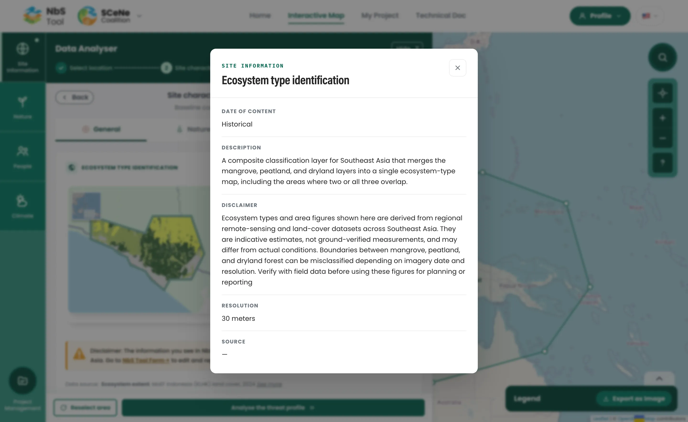
A 30-metre resolution layer cannot tell you about a two-hectare patch. A "historical" date means the figure describes the past, not today. Reading this panel is the difference between a defensible claim and one that falls apart in due diligence.
3.3 Step 3 · Threat profile and screening
What is going wrong, and where. The tool separates your area into how much of each ecosystem is intact and how much is disturbed, then shows the pressures behind that disturbance.

- The summary pair. Total ecosystem area, and how much of it is disturbed, as both a number and a share.
- Per-ecosystem cards. Dryland forest, mangrove and peatland side by side, so you can see which is under most pressure.
- The disturbance map. Shows where inside the boundary the pressure is, classed as remaining, disturbed, forest loss or forest gain.
- Drivers. Summarised as statistics below the map, naming the main pressures rather than just their extent.
3.4 Step 4 · Designing your NbS pathway
The decision step. For each ecosystem present in your area you choose an intervention — Protect, Manage or Restore — and then pick the specific activities you will carry out. This is the step whose output travels furthest: your chosen activities become the monitoring indicators in Step 4 of the overall workflow.
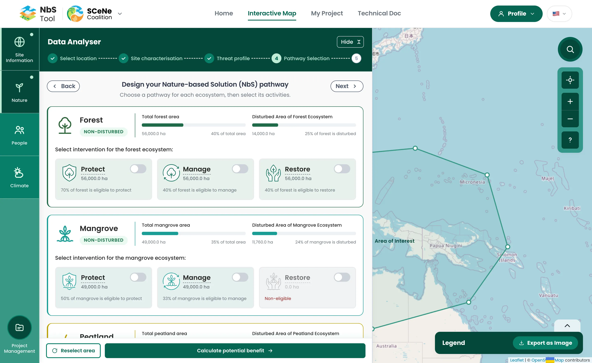
Switching an intervention on reveals the activities available for that combination of ecosystem and pathway. The counter in the header tracks how many you have picked.
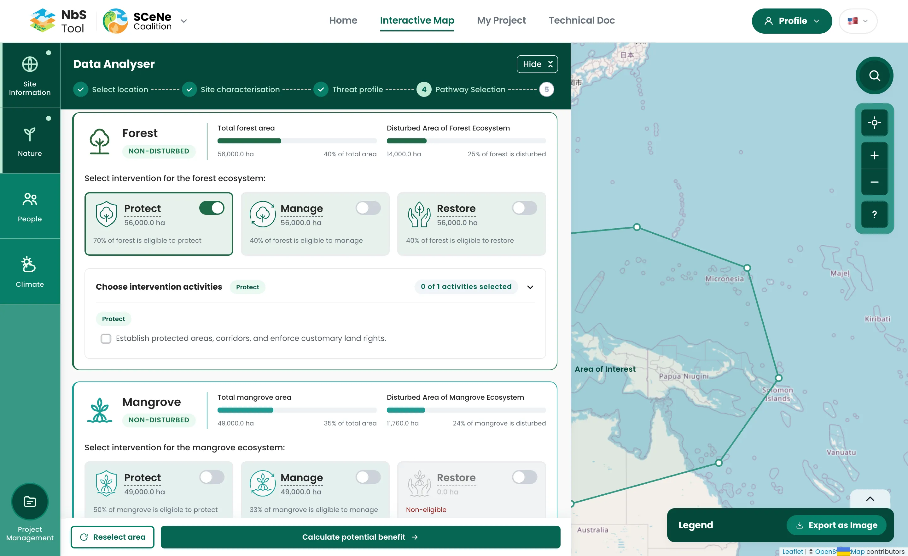
3.5 Duration, and the carbon-project switch
Below the ecosystem blocks sit two settings that change every number in the next step.

- Duration of intervention. Between 10 and 70 years, 30 by default. Benefit estimates are cumulative over this period, so doubling it roughly doubles the headline carbon figure.
- The carbon-project toggle. Switching it on calculates Net Emission Reductions and Removals rather than gross figures.
- Carbon Risk Assumption. Three editable deductions — uncertainty (error in the data and models), leakage (emissions simply displaced elsewhere) and buffer (the pool held back against reversal). Defaults are 10%, 15% and 12%; each accepts 1–100%.
3.6 Step 5 · Potential benefit
What your chosen pathway would be worth, across the same three pillars the Coalition works in: nature, people and climate. A summary strip at the top holds the inputs that produced everything below it.
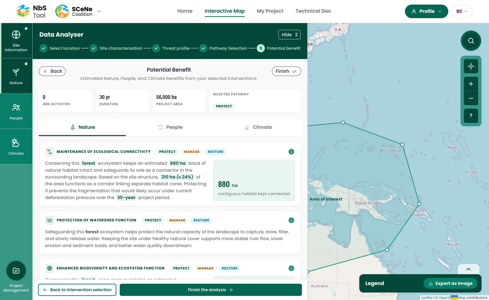
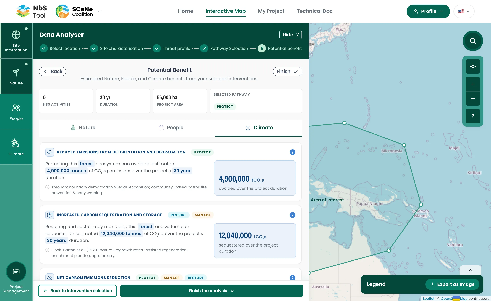
- Pathway tags. On each card — Protect, Manage, Restore — showing which interventions produce that benefit. A greyed tag means you have not selected that pathway.
- Scroll position is remembered per tab. Move between Nature, People and Climate and each comes back where you left it, which matters because these are long lists.
- The method note. Under the explanation, naming the activities or the published rates the estimate rests on.
- Information icons. On every card, opening the same provenance panel described above.
- Finish the analysis. The button at the foot carries the result forward — into a new project, or onto an existing one.
These are screening estimates, not measurements, and they are presented without an uncertainty range. Treat them as an order of magnitude that tells you whether a site is worth a feasibility study — not as a carbon yield you can sell.
Your projects
An analysis becomes useful when it becomes a project: something with a name, a team, a history and a monitoring record. That lives under My Project.

- The counters. Total projects, total area covered, and how many monitoring entries your team has logged.
- Filters. Monitoring status, ecosystem, country, and a sort order — plus free-text search.
- Monitoring status. The column that tells you what each project needs next: Monitoring Active, or Waiting for Monitoring Plan.
- Row actions. The primary button changes with status — Continue Monitoring or Start Monitoring — beside shortcuts to documents and delete.
4.1 Table or cards
The switcher at the right of the filter bar toggles between the table above and a card grid. The cards show a thumbnail of each project's boundary, which is faster to recognise than a name when you manage many sites.
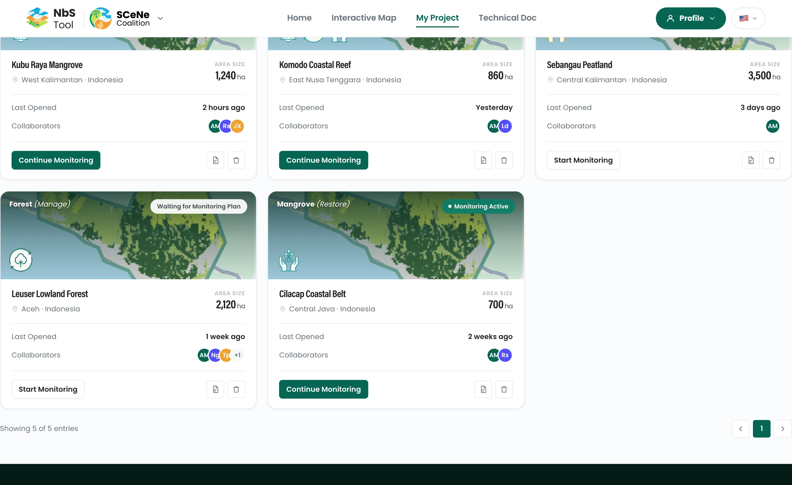
4.2 Starting a new project
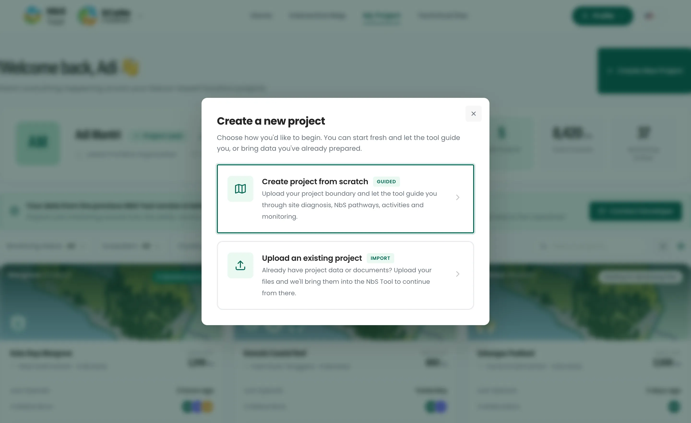
4.3 Inside one project
Opening a project gives you seven tabs, split into two groups: Information (overview, collaborators, privacy, history) and Project data (analysis, monitoring plan, MRV data).
![The Overview tab of a project called Kubu Raya Mangrove. A header carries the project name, a Level 2 Coalition privacy badge, a Monitoring Active status, collaborator avatars, an add button, Edit and delete. Below, a Location and extent card with a map, a Project metadata card listing name, description, province, district, size and creation date, a Project documents card listing Feasibility Study, MRV Report and CCB Standard with generate or edit and download buttons, and an NbS Intervention card listing ecosystem, pathway, activity count and duration.](assets/walkthrough/20-project-overview.webp)
Collaborators
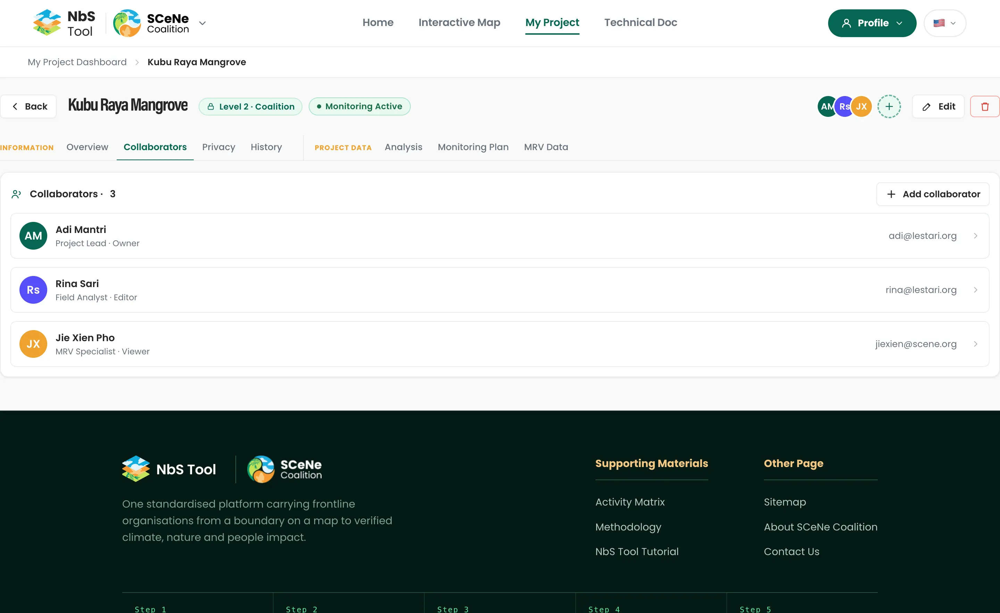
Privacy
The tab with the most consequence. Three levels control how far your project data travels, and the terms beside them spell out what each one means.

- Level 1 · Private. Only you and invited collaborators. Excluded from the public NbS Portfolio.
- Level 2 · Coalition. Visible to verified SCeNe Coalition members and the NbS Incubator, for review and funding matchmaking.
- Level 3 · Public. Listed in the public NbS Portfolio; baseline summaries visible to anyone.
- What is never shared. Personal contact details, financial data, and GPS coordinates at sub-hectare resolution — at any level.
History
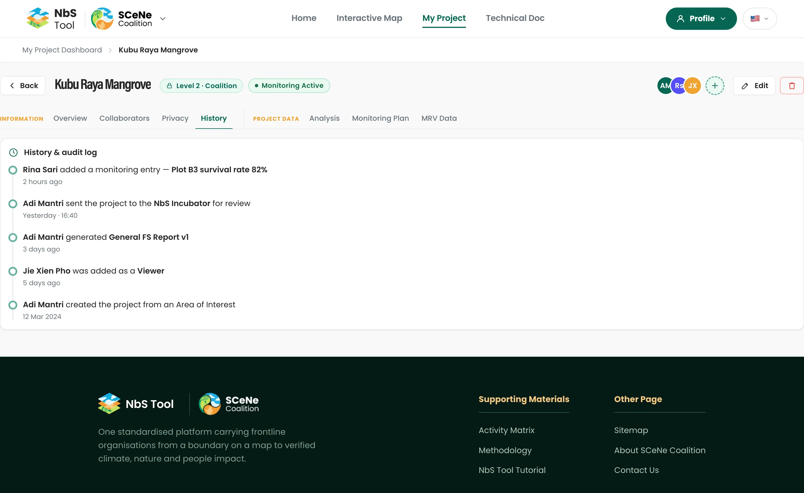
Analysis
The same Data Analyser panes from Chapter 3, re-rendered inside the project rather than over the map — so the baseline you read once stays attached to the project afterwards.
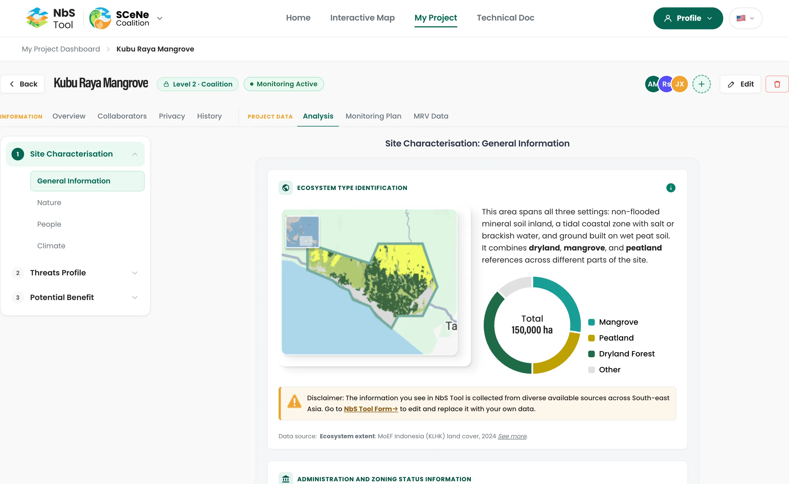
Monitoring Plan & MRV Data
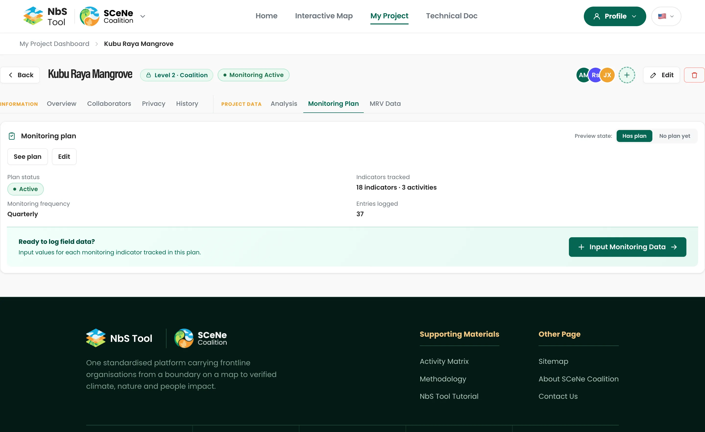
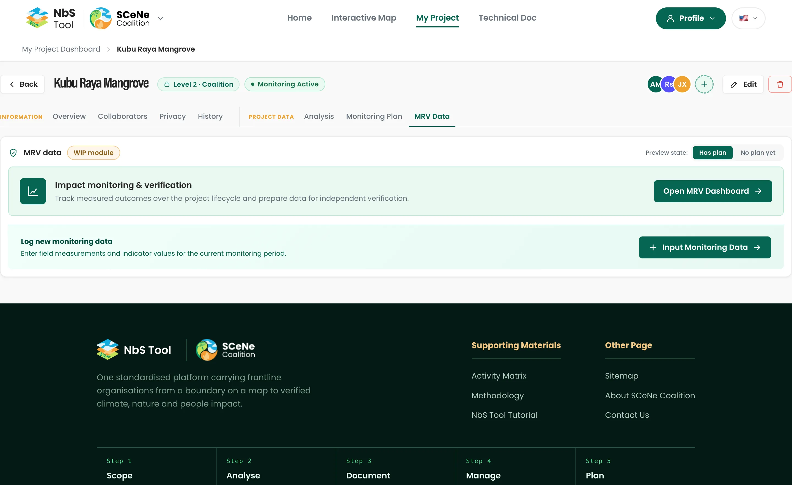
From activities to a monitoring plan
A plan is what turns an intention into something verifiable. The tool builds one for you: you choose activities, and it proposes the indicators, methods and frequencies that go with them. Two routes lead here — importing a project you already run, or planning from a project already in the tool.
5.1 Importing an existing project
A five-step wizard for organisations with a project already running. It skips the map entirely: you bring the boundary as a file, and the tool reads the site characterisation from it.
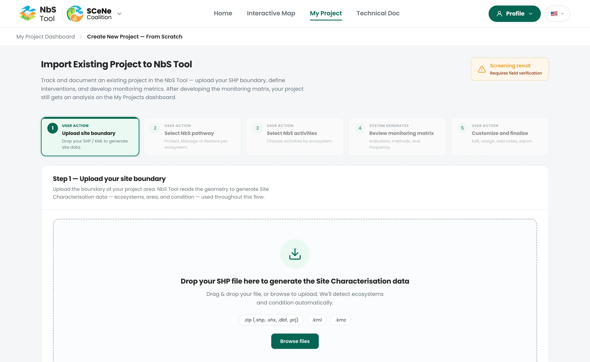
The upload step handles failure as carefully as success. The preview controls below the drop zone let you see each outcome without having to produce a broken file.
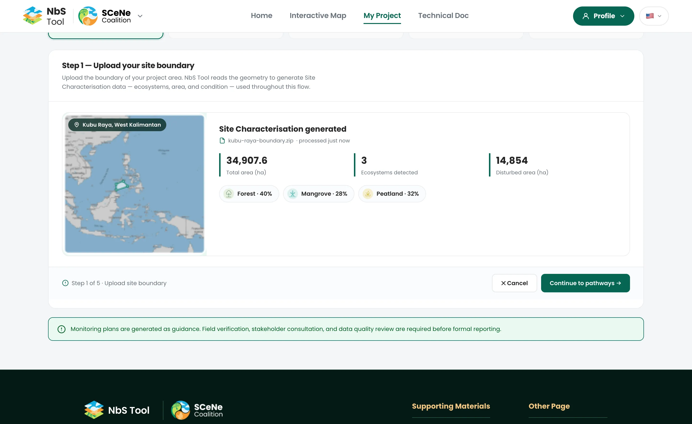
- Valid upload. Site characterisation is generated and the Continue button activates.
- Wrong file format. Refused, naming the formats that are accepted.
- Area > 500,000 ha. Refused: above the tool's analysis ceiling.
- Outside South East Asia. Refused: the underlying layers only cover the region.
Steps 2 and 3 repeat the pathway and activity choices from the map, then the tool generates the matrix.
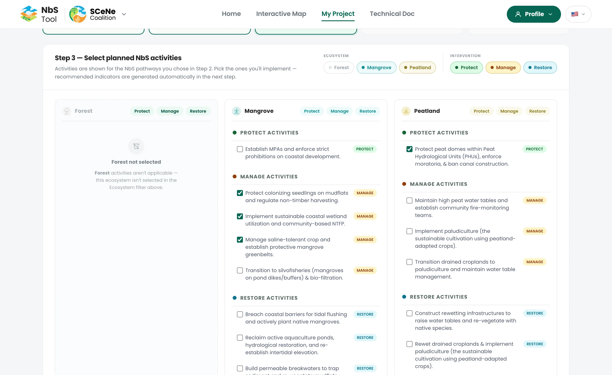
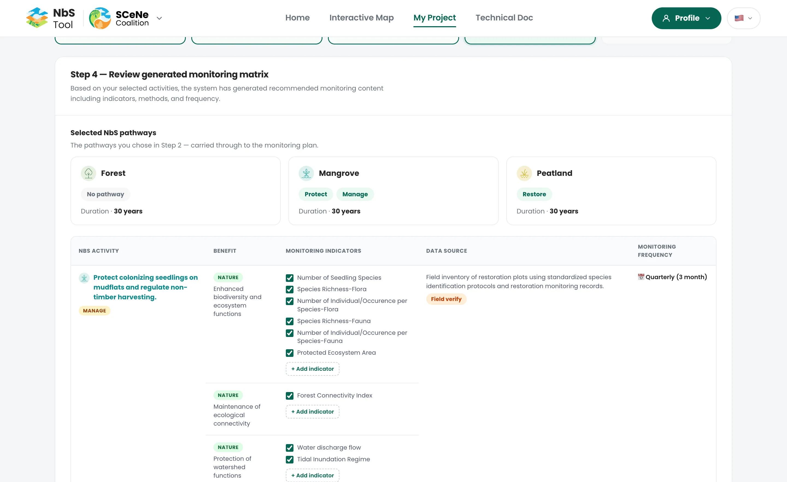

5.2 Monitoring Plan Development
The same job, reached from a project that already exists — so it starts at the activities rather than at a file upload. Three steps instead of five.
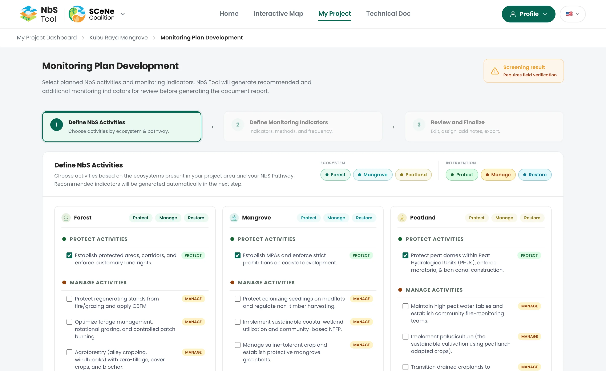
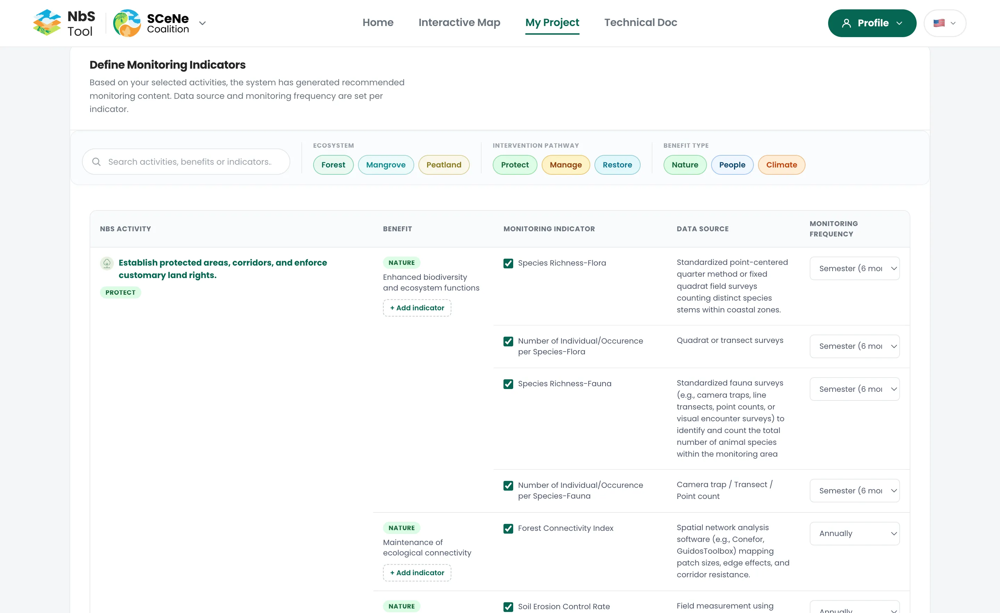
![Step 3, Review and Finalize. Three pathway cards show forest, mangrove and peatland each set to Protect with durations of 15, 20 and 25 years. Three per-ecosystem monitoring plan rows follow, each showing its indicator count and one activity selected. A Plan summary panel counts three ecosystems, three activities, 89 indicators and six monitoring methods, with a Generate Monitoring Plan button. A footnote warns that plans are guidance and require field verification, stakeholder consultation and data quality review.](assets/walkthrough/37-monitoringplan-finalize.webp)
The tool repeats this at the foot of the screen, and it is worth repeating here: a generated plan is guidance. Field verification, stakeholder consultation and a data-quality review all sit between it and formal reporting.
The Document Generator
Funders and standard bodies want particular documents in particular shapes. The Document Generator holds those shapes as templates and walks you through filling them, section by section, keeping a count of what is still blank.
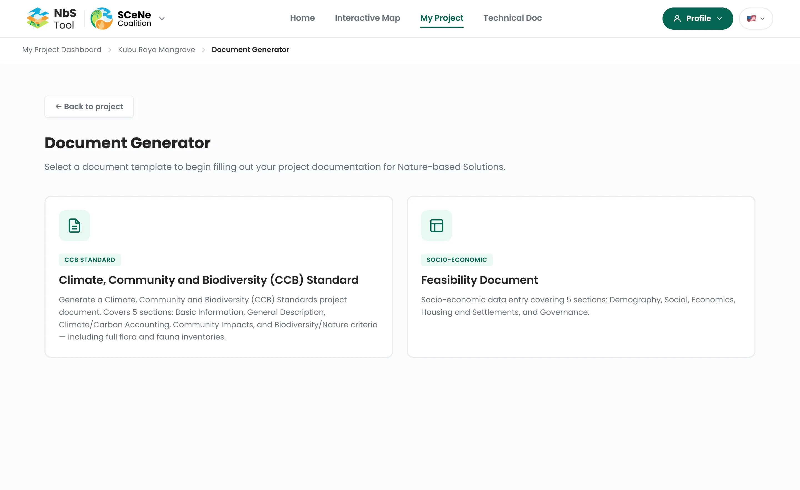
6.1 CCB Standard

- The section rail. Jump between sections in any order; the counts update as you type.
- Save the Draft. Top right. Drafts are kept in your browser, so finish in more than one sitting — but on the same machine.
- Generate Document. Works before the form is complete. You can export a partly filled document and finish it by hand.
6.2 Feasibility Document
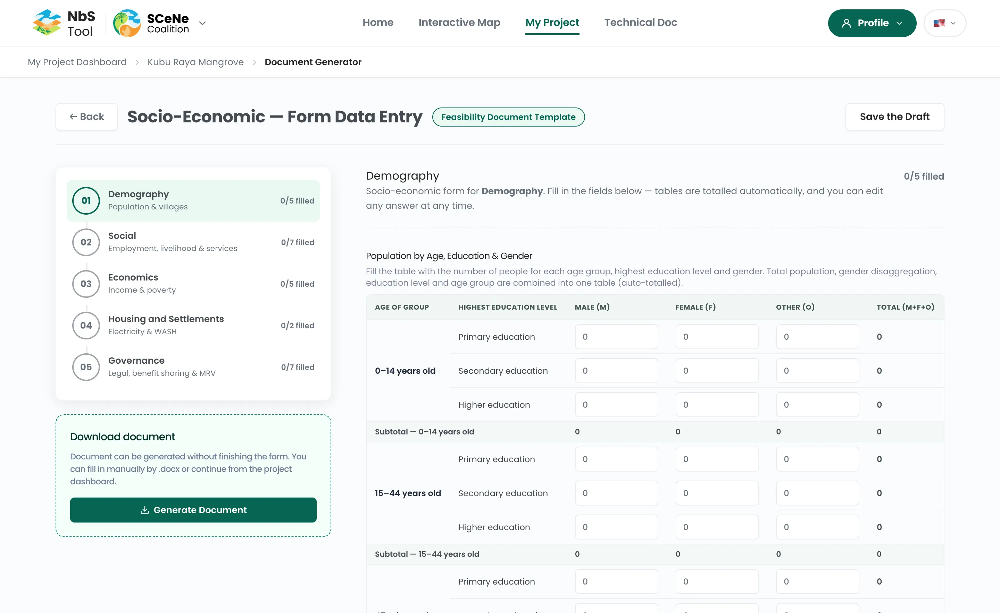
Five sections — Demography, Social, Economics, Housing and Settlements, and Governance. The tables recalculate live: enter counts per cell and the subtotals, gender splits and grand totals follow automatically, so the arithmetic in the finished document is consistent by construction.
Recording what actually happened
A plan predicts; monitoring records. These two screens close the loop: one to enter field observations against the plan's indicators, one to see whether the project is on track and what has been verified.
7.1 The field monitoring form
![The User Input Monitoring Form for Q2 2026. A left column shows 0 per cent recorded, zero of twelve indicators, then groups for Mangrove, Dryland Forest and Peatland with per-group counts and a Review and Submit step, above a Submit monitoring data panel. The main area has a reporting period selector, then indicator cards — area of habitats restored and mangrove cover change — each showing target, method and frequency, with fields for recorded value, unit, date collected and data source, plus an Attach evidence button and an optional note.](assets/walkthrough/38-monitoring-form.webp)
- The reporting period. Selected at the top; everything you enter is filed against it.
- Per-group progress. The left column counts how many indicators in each ecosystem you have recorded, and the overall percentage.
- Target, method, frequency. Carried through from the monitoring plan onto each card — the plan and the form are the same document seen twice.
- Attach evidence and notes. Per indicator, for photographs, measurements or context.
- Partial submission. Supported by design: submit what you have and continue later.
7.2 The MRV dashboard
![The MRV Dashboard for Kubu Raya Mangrove. A dark hero carries the project name, location, size, pathway and reporting period, with Input Monitoring Data and Change Monitoring Plan buttons. Below, a Monitoring indicators table filtered by ecosystem lists each indicator with its latest value against target, a progress bar and percentage, when it was last updated, and a status pill reading On track or Update due. A right column shows reporting progress at 68 per cent with 8 of 12 indicators filled, a prompt to add field data, and an activity log naming who logged which entry and when.](assets/walkthrough/39-mrv-dashboard.webp)
- Progress to target. Per indicator, as both a bar and a percentage.
- Status. On track, or Update due when an indicator has gone too long without a reading.
- Ecosystem filter. Above the table, to look at one ecosystem at a time.
- Reporting progress. How much of this period's data is in, and how much is outstanding.
- Activity log. Who recorded what, and when — the record a verifier will ask for.
When you need to go deeper
Three reference surfaces sit behind the workflow. Reach for them when a figure needs defending, when you want to understand the taxonomy underneath the activities, or when you simply need to find a screen.
8.1 Technical documentation
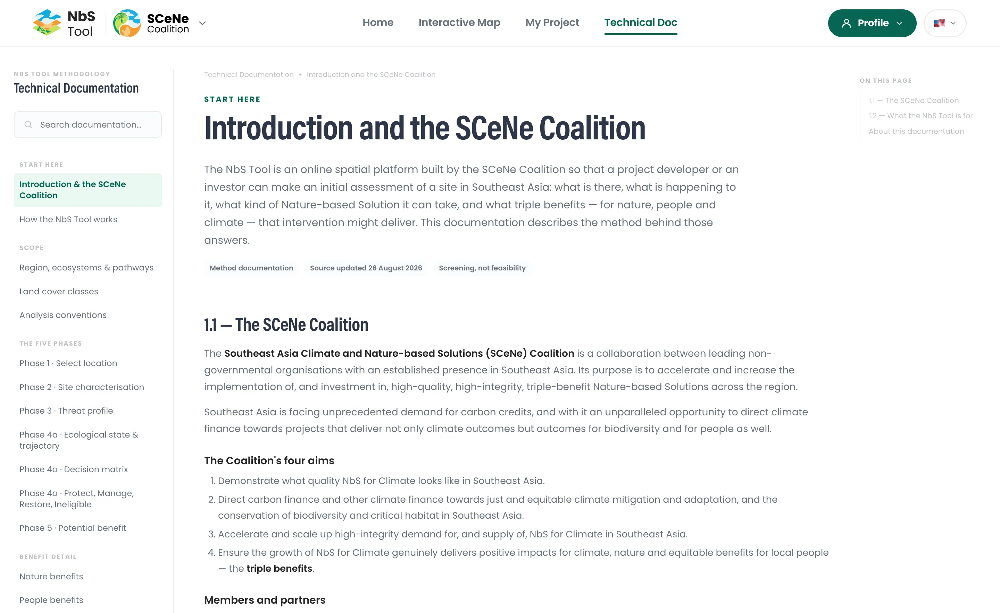
This is where you go to answer "how was this produced?". It covers the five analysis phases in detail, the full catalogue of spatial layers behind each figure, the carbon constants, and an explicit chapter on limitations and how to read a figure safely.
8.2 The activity matrix
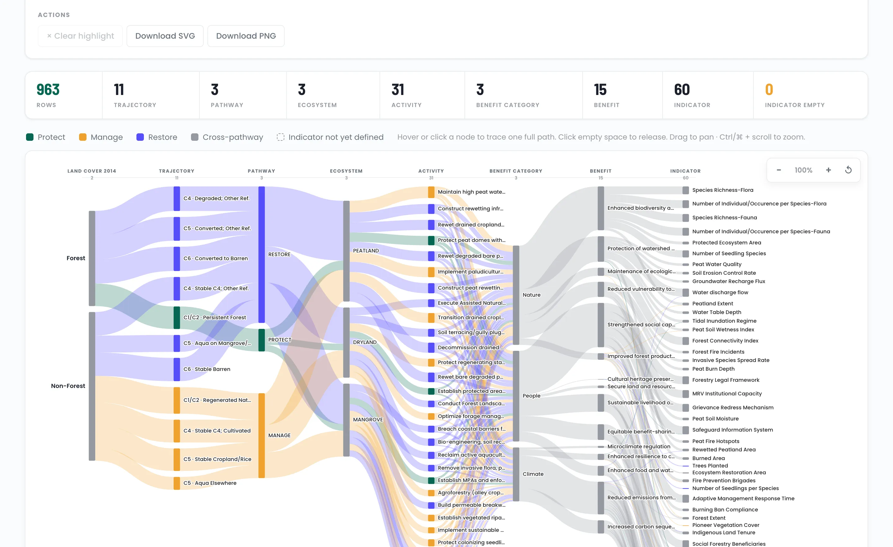
- Trace one path. Hover or click any node to highlight every route through it; click empty space to release.
- Pan and zoom. Drag to pan; hold Ctrl or ⌘ and scroll to zoom.
- Export. Download the diagram as SVG or PNG.
- Why it matters. This is the logic the tool uses to decide which activities your ecosystem and pathway allow, and which indicators an activity implies.
8.3 Sitemap
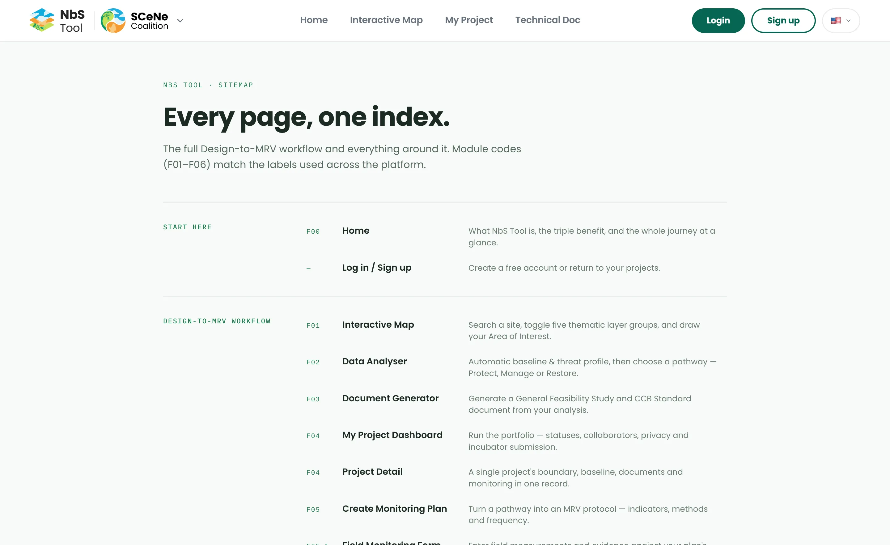
8.4 What changed in v3.0
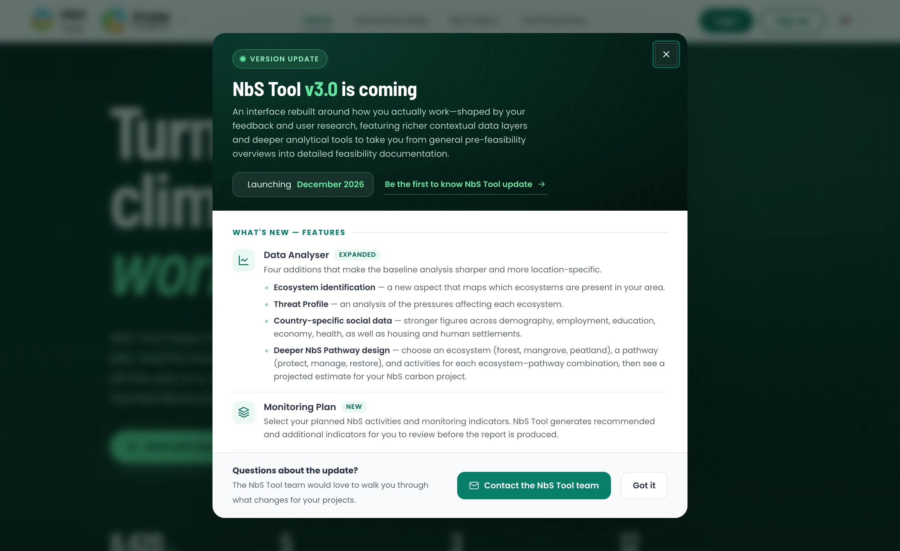
- Ecosystem identification. New in the Data Analyser: which ecosystems are present in your area.
- Threat profile. New: the pressures affecting each ecosystem.
- Country-specific social data. Stronger figures across demography, employment, education, economy, health, housing and settlements.
- Deeper pathway design. Ecosystem, then pathway, then activities per combination — with a projected estimate for a carbon project.
- Monitoring Plan. A new module: activities in, recommended indicators out, reviewed before the report is produced.
Where to go next
The fastest way to understand the tool is to run one area through it. Draw something you know, and compare what the analyser says with what you have seen on the ground — the gaps will tell you more about both than any amount of reading.